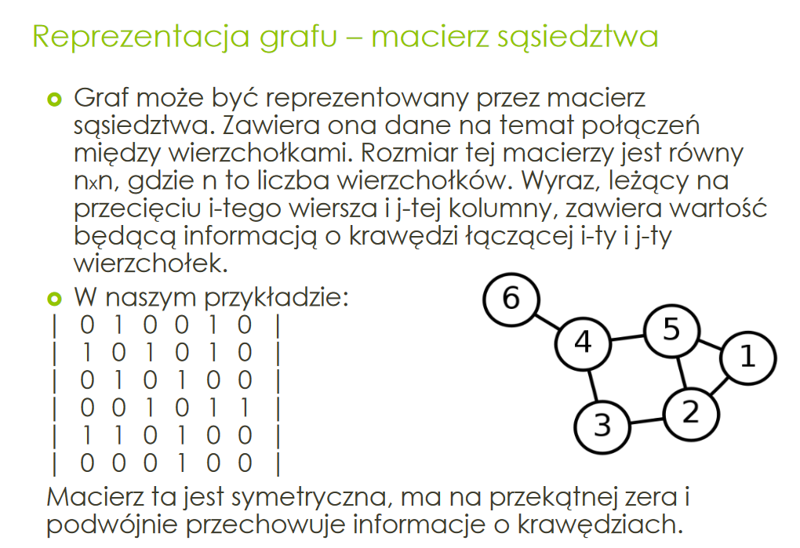
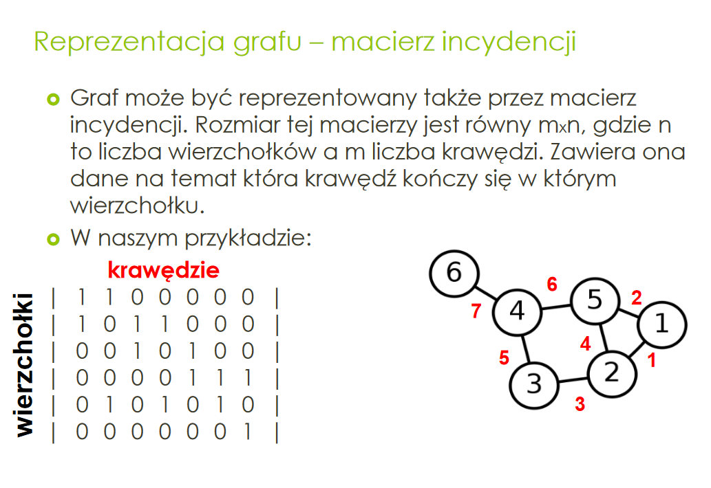
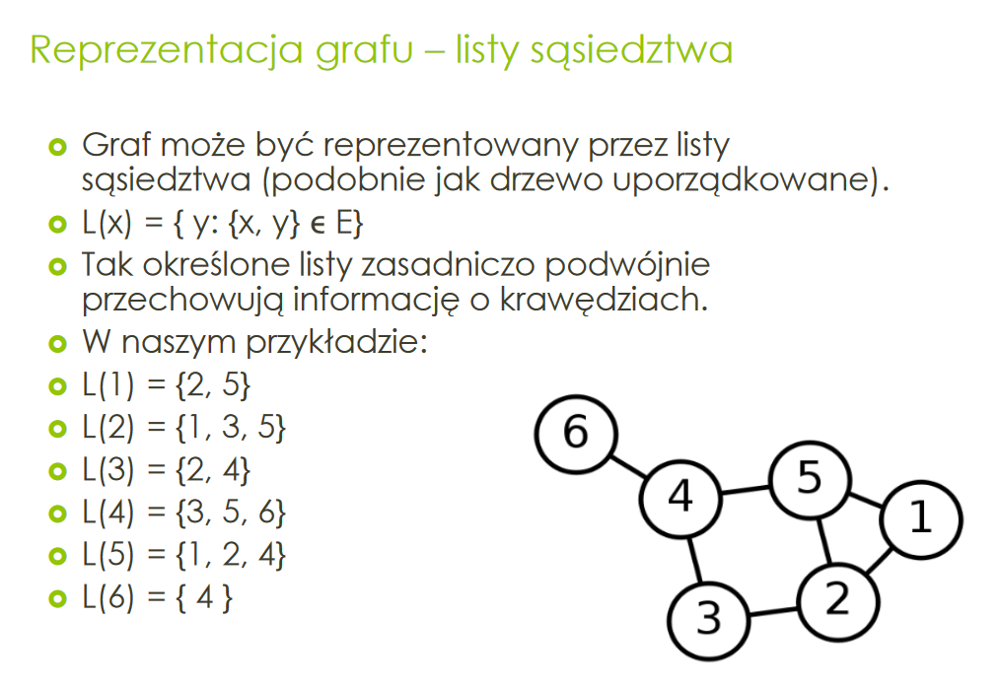
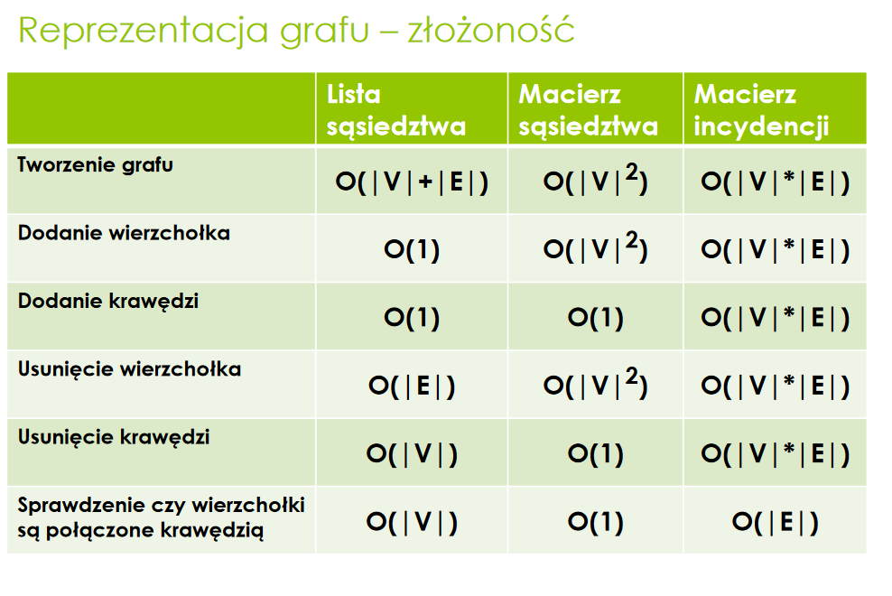
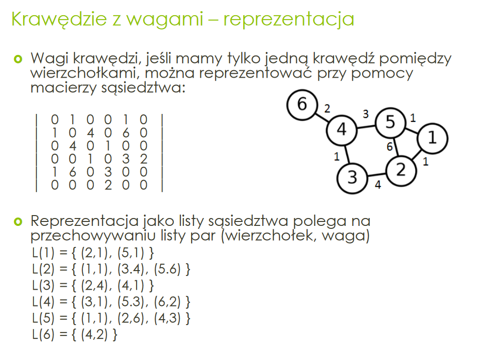

Aktualizacja pliku: 23.01.2018 11:48
Algorytmy
Materiały na drugi kolos z Algorytmów i Danych Struktur.
Wyświetlanie Pre-order z nawiasami najlepszą metodą na ogarnięcie struktury!
Debugowanie!!!
- F10 - przenosi wykonanie do następnej linijki (step over)
- F11 - wchdozi do funkcji (step into)
Lab 8 - Lista, Stos, Kolejka
Lab 9 - Drzewa, Drzewa binarne
Lab 10 - Kopiec binarny
Lab 11 - Drzewa BST
- Drzewo BST - 500 linii kodu w tej zdradzieckiej strukturze… ;)
Lab 12 - Zbiory, Hashowanie
Lab 13 - Grafy
Kolos nr 2
Opisy
Drzewo
- Stopień węzła w drzewie - to liczba jego następników (liczba dzieci)
- Liść - węzeł bez następników (bez dzieci)
- Węzeł wewnętrzny - to węzeł, który nie jest liściem (czyli ma następników / dzieci)
- Poziom węzła - długość ścieżko od korzenia do tego węzła
- Wysokość drzewa - to największy poziom węzła w tym drzewie
Rodzaje drzew binarnych
- Regularne drzewo binarne to takie drzewo binarne, którego węzły mają stopień parzysty (czyli dwa lub zero).
- Zupełne drzewo binarne to drzewo binarne, w którym wszystkie poziomy są wypełnione całkowicie, z wyjątkiem co najwyżej ostatniego - spójnie wypełnionego od lewej strony
- Pełne drzewo binarne - to regularne drzewo binarne, w którym wszystkie liście mają ten sam poziom
Przechodzenie przez drzewo
- PRE-ORDER - najpierw odwiedzamy poprzednik, a następnie jego następniki w kolejności od lewej do prawej.

- POST-ORDER - najpierw odwiedzamy następniki węzła, a dopiero potem sam węzeł

- IN-ORDER (tylko w drzewie binarnym) -
- przejdź lewe pod-drzeweo,
- odwiedź korzeń,
- przejdź prawe pod-drzewo
In order w drzewie BST wyświetla elementy tak, jak by były posortowane
Drzewo Trie

Kopiec binarny
Kopiec binarny (binary heap - stóg, sterta) to zupełne drzewo binarne, spełniające warunek kopca: dla każdego węzła X wartość następnika nie jest większa niż wartość X
- Warunek istnienia kopca - dla każdego węzła X, wartość następnika jest nie większa niż wartość X. Jeśli X ma indeks
i to następniki mają indeksy 2*i+1 oraz 2*i+2
- Liczba węzłów - Na 0-wym poziomie jest jeden węzeł, czyli
2^0.
- Na 1-szym poomie są 2 węzły, bo
2^1.
- …
- Na
(h-1) poziomie jest 2^(h-1) węzłów.
- Na ostatnim poziomie jest od 1 do
2^h węzłów
- Najmniejsza liczba węzłów 1+2+4+…+ 2^(h-1) +1 = 2^h
- Największa liczba węzłów 1+2+4+…+ 2^(h-1) +2^h = 2^(h+1) -1
- Ilość liści i ilość węzłów wewnętrznych:
- Liczba liści jest nie mniejsza niż liczba węzłów wewnętrznych
- Ale jednocześnie węzłów wewnętrzych nie może być mniej niż liści o więcej niż 1
- Czyli albo liści jest tyle co wewnętrznych gdy n parzyste
- Albo liczba liści jest o 1 większa gdy n - nieparyste
- Gdzie w kopcu można znaleźć element najmniejszy? -> W liściach
- Czy tablica, która jest odwrotnie posortowana (tzn. nierosnąco), jest kopcem? -> Tak
Sortowanie przez kopcowanie

Drzewo BST
- IN-ORDER wyświetla drzewo, wypisując elementy posortowane
- Dzięki wyświetlaniu PRE-ORDER w notacji z nawiasami możliwe jest łatwe narysowanie drzewa na kartce
- Wykaż, że czas przechodzenia drzewa w porządku in-order jest liniowy => wystarczy do metody wyświetlającej in-order dodać licznik kroków(tzn. ilość wywołania tej funkcji). Później wysarczy to zliczyć, by zobaczyć, że liczba wywołań funkcji jest taka sama jak ilość węzłów.
- Rotacje (obroty):

Grafy





- DFS - przechodzenie przez graf w głąb - DepthFirstSearch
- BFS - przechodzenie przez graf wszerz - BreadthFirstSearch
Słowniczek
- Node - węzeł
- root - korzeń
- leaf - liść
- value - wartość
- children - dzieci
- parent - rodzic
- head - głowa
- rear - tył (ogon)
- Tree - drzewo
- Stack - stos
- Queue - kolejka
- Init - zainicjować (nadać wartość początkową)
- Show - pokaż (wyśiwetl)
- Get - weź (pobierz)
- Height - wysokość
- Length - długość (wielkość)
- left / right - lewe / prawe (dziecko, poddrzewo, węzeł)
- prev / next - poprzedni / następny
- Search - szukaj
- Insert - wstaw
- word - wyraz, słowo
- Empty - pusty
Lista metod w strukturach danych
- Stos (Stack)
Push() - wrzuca element na wierzchołek stosuPop() - zwraca element z wierzchołka i go usuwaPeek() - zwraca element z wierzchołka bez jego usuwaniaEmpty() - zwraca true, jeśli stos jest pusty
- Kolejka (Queue)
Enqueue() - dodaje element na koniec kolejki (Add, Insert)Dequeue() - usuwa element z początku kolejki (Remove)Peek() - zwraca (bez usuwania) element z początku kolejki
- Lista (List)
- Drzewo (Tree)
- Kopiec (Heap)
Heapify()Build()Insert() - wstawia element do kopcaExtractMax() - zwraca i usuwa największy element z kopca. Następnie na to miejsca wrzuca element najmniejszyMaximum() - zwraca (bez usuwania) największy element kopcaHeapSort() - sortowanie przez kopcowanie
- Graf (Graph)